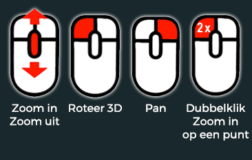

In deze korte handleiding worden de mogelijkheden beschreven voor het gebruik van de viewer. Aan bod komen onder andere het navigeren, meten en veranderen van de weergave.

Gebruik de muis zoals aangegeven op bovenstaande afbeelding.De opties zijn:- met het muiswiel kun je in- en uit-zoomen.- met de linkermuisknop kun je roteren.- met de rechtermuisknop kun je pannen/verschuiven.- met een dubbelklik kun je inzoomen en centreren rond dat geprikte punt.
Middels het kwast-icoon kan de weergave ingesteld worden van de puntenwolk. Er kan een schaduw-effect (EDL licht) worden ingesteld, puntkwaliteit, punt kleuren (kleur, intensiteit, hoogte, mix).Van de hoogte is ook het hoogtebereik aan te passen.
Middels het kwast icoon kan er gekozen worden voor diverse meet methoden zoals een hoogtepunt, afstandmaat, hoogteverschil of polygoon.Ook is er een optie om de metingen te verwijderen.
Met de meetoptie "Punthoogte" kan een hoogte (Z-waarde) van een punt worden weergegeven.De metingen zijn ook te downloaden naar DXF zodat ze in een CAD of GIS pakket gebruikt kunnen worden. De hoogtes worden als tekst weergegeven.
Met de meetoptie "Afstand" kan een 3D lijn getekend worden over meerder puntenwolk-punten.Met een rechtermuisklik wordt het lijn-commando afgesloten.De metingen zijn ook te downloaden naar DXF zodat ze in een CAD of GIS pakket gebruikt kunnen worden. De lijnen worden als 3D-lijn weergegeven.